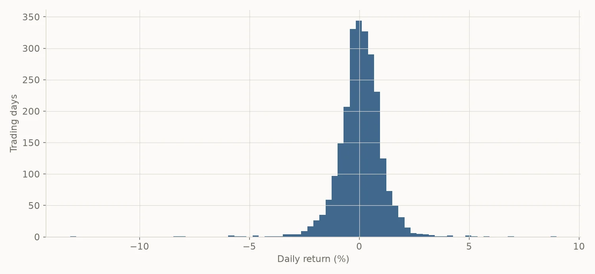
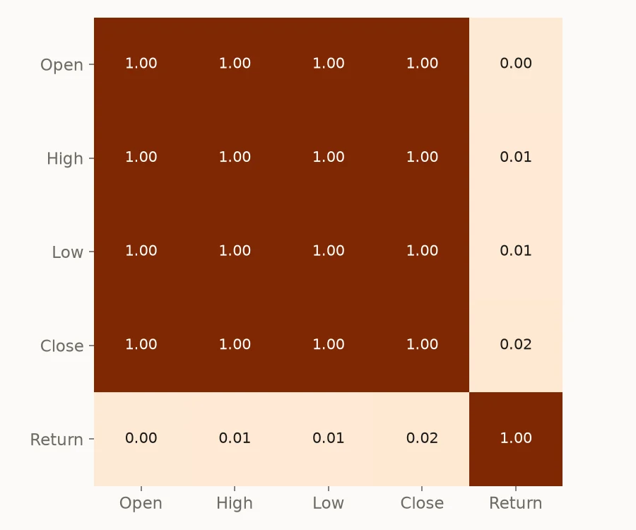

SENSEX,ten years in
A decade of BSE SENSEX daily prices, cleaned, explored and modelled, with an honest look at what the model can and can't tell you.
- Data
- BSE SENSEX daily OHLC, Apr 2014 – Mar 2024
- Methods
- EDA, correlation, PCA, linear regression
- Stack
- pandas, scikit-learn, Matplotlib, seaborn
- Delivered as
- Jupyter notebook, Flask report, Streamlit app

- Trading days analysed
- 2,468
- Growth of the index over the decade
- 3.3×
- Worst single day, 23 Mar 2020
- −13.2%
- Regression R² (same-day features)
- 0.999
01Pipeline
- Step 1CleanForward-fill gaps, parse dates, sort by time
- Step 2EngineerDaily return = % change in close
- Step 3ExploreTrend, return distribution, correlations
- Step 4ReducePCA on scaled Open / High / Low
- Step 5ModelLinear regression, time-ordered 80/20 split
The train/test split keeps time order (shuffle=False): the model trains on 2014–2022 and is tested on the last two years. A shuffled split would let the model peek at the future.
02What the data shows
- A 3.3× decade. The index rose from 22,446 to 73,651, and the March 2020 crash was fully recovered by the end of that year.
- Most days are quiet. The average daily move is +0.05% with a standard deviation of about 1%. Only 33 of 2,468 days moved more than 3% either way.
- The extremes cluster. The worst day (−13.2%, 23 Mar 2020) and the best day (+9.0%, 7 Apr 2020) were two weeks apart.
- Prices are one signal, not four. Open, High, Low and Close correlate at 1.00, and the first principal component explains 99.99% of their variance.

03Why R² 0.999 is misleading
The regression predicts the close from the same day's Open, High and Low. It scores R² 0.9992 with a mean error of ₹117. That sounds impressive, but it isn't a forecast.
The day's High and Low are only known once trading ends, and the close always lies between them. So the model is mostly interpolating within a range it has already been given.
A quick check on the same two-year test window shows this:
| Approach | Uses | R² | Mean abs. error |
|---|---|---|---|
| Project regression | Same-day O / H / L | 0.999 | ₹117 |
| Naive guess | Yesterday's close | 0.992 | ₹377 |
| Next-day regression | Today's O / H / L / C | 0.992 | ₹378 |
A real next-day model does no better than "tomorrow = today". It calls the direction of the next move correctly only 55% of the time. High R² on price levels comes almost free because prices drift slowly. The honest target is returns, not prices.

04Next steps
- Predict next-day returns from lagged features (past returns, rolling volatility, moving averages)
- Use walk-forward validation instead of a single split
- Compare against the naive baseline every time
- Deploy the Streamlit app so the analysis is browsable online
